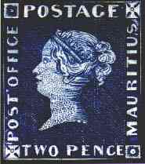
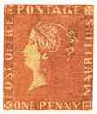
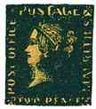
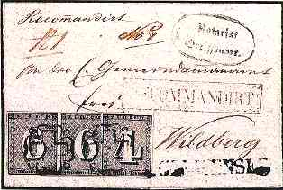
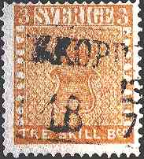

|
|
 |
 |
 |
The Most Famous Philatelic Items
This
page is dedicated to some of the most famous stamps worldwide. Each of them has an
interesting history and is special in a certain way. On this page I will tell you the
story of the most famous of all of them.
In the year 1847 the Governor of the Mauritius Island, situated in the
Pacific Ocean, decided to issue some postal stamps for the island, 7 years after the first
stamp was issued in Great Britain. Mr. J. Barnard, a watchmaker from the capital Port
Louis, got the contract to produce two stamps, one with the value of one penny and another
with the value of two pence. As he worked at the engraving of the stamps he suddenly
realized that he forgot what he had to write on them, so he went to the post office in
order to get more information. As he approached the building, he read the inscription Post
Office and he had the impression that he remembered what he was said earlier to put on the
stamps. So he returned to work and engraved those two words that made from these stamps
the most famous ones in the history of philately: Post Office. When he learned later that
the correct inscription should read "Post Paid", it was too late. Already 240
pieces of both stamps were printed and sold.
Please point the images with the mouse index to get supplementary
information about the masterpieces displayed.
|
|
 |
 |
 |
From them only 26 pieces survived, 12 of One Penny cancelled and 2 mint and 6 of Two Pence cancelled and 6 mint. On the first row above there is displayed the so called Bordeaux Letter, with both Mauritius' stamps on it (the most rare and at time the most expensive philatelic item) and some separate Mauritius stamps.
|
|
 |
|
 |
Some auction prices (most of the presented material was sold by one and the same auction company: David Feldman SA, 1213 Onex, Geneva, Switzerland. )
|
The above badly centered Tre Skilling stamp was issued in 1855, used in 1857 and found by Georg Wilhelm Backman on a letter during a visit to his grandmother. Due to a manufacturing error, this stamp is colored in yellow instead of the usual green. Recently, when the unknown owner of the stamp accepted to show it abroad, the stamp was assured for 10 Millions Dollars. During the transfer to an airport in Copenhagen, the stamp was transported in an armored van and was protected by an escort consisting of a police car and of four policemen on motorcycles.
A few of us, the rank and file stamps collectors from the whole world, will have the privilege to take a look at all these philatelic jewels and even less of us will ever possess any of them. But their very existence gives the philately its greatness and to philatelists the desire to search for the rare, the exclusive, the unusual, the beautiful.
| Revised:
06/04/03.
Copyright © 1999 - 2003 by Victor Manta, Switzerland. All rights reserved in all countries. |
|
|